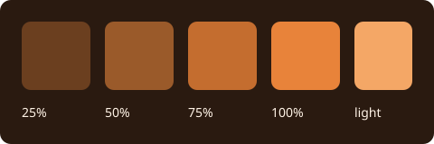

Everything, back to back
Every page of this project, one after another, on a single page. It is two things at once:
- A feature list. The table of contents lists every kind of content and every look-and-navigation topic, in the order of the tours.
- A performance probe. One page that holds every diagram, table, viewer, formula and code block of the project is the heaviest page the reader is asked to draw here. Time how long it takes to open, scroll and search.
Text and typography
Inline marks, paragraph flow, lists, tasks and emoji.
Inline marks
Bold · italic · both · underline · retired · highlight · spoiler · H2O · x2 · code · Ctrl+K
Subtext sits quietly beneath a main idea.
The marks nest: bold inside a highlight, underline with code inside, bold with a highlight and H2O, and a spoiler hiding bold, code and a link.
Paragraph flow
A soft break keeps the line in the same paragraph.
This line follows two trailing spaces.
A quotation keeps its own voice, and can run to a second paragraph.
That second paragraph stays inside the quotation.
Lists and tasks
- An unordered item
- A nested item
- A third level
- A nested item
- Another item
- A first step
- A second step
- A sub-step
- A third step
- A completed task, saved in the source
- An open task, saved in the source
- A reader checkbox: click it, it is not saved
Emoji
Built-in 


 and a project emoji from
and a project emoji from CUSTOM_EMOJI. Raw unicode passes through: 🚀 🎉 and joined sequences such as 👩🚀 and 👨👩👧👦.
Edge cases that stay quiet
Escaped markup stays literal: *not italic*, ==not highlighted==, `not code`.
Delimiters around nothing are not marks: == == stays == ==, ^ ^ stays ^ ^, ++ ++ stays ++ ++.
Strikethrough keeps its tildes: struck next to H2O.
A very long unbroken string wraps inside the column instead of widening the page: Pneumonoultramicroscopicsilicovolcanoconiosis_and_then_some_more_characters_without_any_spaces_to_break_on.
Reading measure
Good typography is mostly a matter of line length and rhythm. The reader sets text in a column of about seventy characters, because eyes lose their place on lines much longer than that. On a wide screen, the reading-width button lets the column use the whole window; on a phone, the column simply fills the screen.
Headings, quotes and lists keep their own spacing, so a page that mixes them still reads as one voice. Try the width button, then come back to this paragraph.
Callouts and spoilers
Asides with the right weight, and content that waits to be asked for.
Alerts
Note
Background worth keeping nearby.
Tip
A practical improvement.
Important
A prerequisite or a key constraint.
Warning
A consequential problem to avoid.
Caution
A risk that needs attention before acting.
Callout blocks
A callout holds Markdown and several blocks:
- a list
- with
code
| And | a table |
|---|---|
| inside | the callout |
A verified outcome.
A longer warning, with normal Markdown inside.
A concrete danger, not decorative red.
Spoilers
Click to reveal
Spoiler blocks are disclosure controls, not privacy controls.
const answer = 6 * 7
A spoiler holding a callout
A callout inside a spoiler.
Text after the inner callout stays in the spoiler.
Inline spoilers hide a word: the answer is forty-two.
Raw HTML disclosure
A plain details element
The browser's own details and summary elements work as well.
Quotations
The reader keeps quotations visually quiet.
A nested quotation sits one level deeper.
Columns, tables and alignment
Side-by-side blocks and tables that behave on every screen.
Columns
Before
The original approach, in ordinary Markdown.
After
The revised approach, next to it.
One
A column can hold a list:
- first
- second
Two
Or a callout:
Tip
Columns scroll sideways on a narrow screen.
Three
Or an image:

Four
short
columns
wide
Tables
| Facet | Purpose | Sample pages |
|---|---|---|
| Left aligned | Centered | Right aligned |
code in a cell |
highlight | a link |
| A pipe, escaped | A | B | 2 |
A wide table scrolls instead of breaking the page
| Surface | Where | Changes with | Shown by | Kept in | Reset by | Example | Note |
|---|---|---|---|---|---|---|---|
| Theme | Whole reader | Toggle or config | Colors | Browser | Clearing site data | Dark | One per reader |
| Width | Content | Toggle | Column | Browser | Clearing site data | Full | Wide screens |
| Panels | Sides | Buttons, swipes | Layout | Session | Reload | Hidden | Phones swipe |
A ragged table and a long cell
| Short | A long cell | Missing |
|---|---|---|
| a | https://example.com/a/very/long/address/that/has/no/spaces/to/wrap/on/and/keeps/going/and/going | |
| b | A sentence that wraps at word boundaries inside its column | c |
Rules
Code
Fenced blocks are highlighted by language, never run, and have a copy button.
A dozen languages
const pages = ["text", "code", "math"]
console.log(pages.map(title => title.toUpperCase()).join(" / "))
def tour(stops):
for number, stop in enumerate(stops, start=1):
print(f"{number}. {stop}")
interface Page { id: string; tags: string[] }
const home: Page = { id: "home", tags: [] }
for file in assets/*.png; do
echo "$file: $(wc -c < "$file") bytes"
done
{ "TITLE": "Everything", "ACCENT": "#e8833a" }
reader:
theme: dark
accent: "#e8833a"
<figure>
<img src="assets/sample-image.png" alt="A cover" width="160">
<figcaption>Raw HTML in a code block stays text.</figcaption>
</figure>
.demo-skin { --color-accent: #e8833a; border-radius: var(--r-md); }
SELECT title, updated FROM pages WHERE tags LIKE '%gallery%' ORDER BY updated DESC;
fn main() {
let tags = ["gallery", "visual"];
println!("{}", tags.join(", "));
}
package main
import "fmt"
func main() { fmt.Println("hello, reader") }
- ACCENT: "#3fabd1"
+ ACCENT: "#e8833a"
Aliases and plain text
py and sh are aliases for Python and Bash. A fence with no language stays plain:
No language: no highlighting, same spacing,
and the whitespace is kept.
A fence that contains a fence
```js
console.log("a fence inside a fence")
```
A wide block scrolls
This line is deliberately far wider than the reading column so the block scrolls sideways instead of stretching the page or wrapping: 0123456789 0123456789 0123456789 0123456789 0123456789 0123456789 0123456789 0123456789
Inline code
Use inline code for names, a b c side by side, and a `backtick` inside with a longer run.
Math
KaTeX formulas, inline and display, with prices left alone.
Inline
The mass–energy relation $E=mc^2$ stays in the sentence, and so does a braced number ${2+3}$. Prices such as $5 to $10 remain text.
Display
Matrices, sums and cases
Sets and symbols
$\mathbb{R} \subset \mathbb{C}$, $\forall \epsilon > 0\ \exists \delta > 0$, $\binom{n}{k}$, $\sqrt[3]{27} = 3$, $\vec{v} \cdot \vec{w}$.
Math stays out of code
Inside code $not math$ is literal, and so is a fence:
$$ not math $$
Diagrams
Thirty-five diagram types from Mermaid, drawn by the reader in the project's colors. They are grouped here by what they describe.
Flows and structure
How things connect: steps, roles, messages, classes, states, records, requirements, systems and blocks.
flowchart
A process, decision tree or dependency path. Label decisions and outcomes; split an unreadable tangle.
swimlane-beta
A process divided by responsibility. Keep lanes consistent and label handoffs between teams or systems.
usecase-beta
Actors and the goals a system supports. Show system boundaries and distinguish required included behavior from optional extensions.
sequenceDiagram
Messages between actors over time. Keep participants stable and distinguish alternatives from parallel work.
classDiagram
Software types and their relationships. Use only attributes and methods supported by the source.
stateDiagram-v2
States and allowed transitions. Show a state machine, not a chronological task list.
erDiagram
Data entities, keys and cardinality. Do not invent a relationship because two records share a word.
requirementDiagram
Trace requirements to verification and dependent elements. Preserve IDs and source evidence.
C4Context
People and systems, or containers within a system. Choose the right abstraction level and name boundaries.
block-beta
A deliberate block arrangement or layered structure. Prefer flowchart when layout is secondary to connections.
architecture-beta
Services, infrastructure groups and links. Diagram actual components rather than decorative cloud boxes.
zenuml
A sequence diagram in ZenUML notation. PMD loads its pinned registration; do not relabel arbitrary Java-like code as a diagram.
Time, plans and journeys
How things unfold: schedules, histories, boards and the order of events.
journey
A person’s experience across stages and actors. Scores must be supplied or explicitly labeled illustrative; this is distinct from a PMD reading journey.
gantt
A schedule with actual dates/durations/dependencies. Proposed plans must be labeled; do not convert update dates into commitments.
timeline
Named historical periods/events. Keep dates factual and distinguish this authored diagram from a page-update timeline.
gitGraph
Branch/merge history or a proposed workflow. A diagram does not create Git commits.
kanban
An authored work-board snapshot. It is not a live task database; changes require source edits.
eventmodeling
Commands, events and read models across a process. Keep order and system ownership explicit.
Data and charts
How much and how many: shares, positions, flows, series, comparisons and overlaps.
pie
A small number of nonnegative parts of one whole. Use a table/bar chart when precise comparison matters.
quadrantChart
Items positioned on two meaningful dimensions. Explain axes and the basis for placements.
sankey-beta
Quantities flowing between stages. Verify units and conservation assumptions; not a generic dependency graph.
xychart-beta
Numeric comparisons or trends with labeled axes/units. Preserve measured data and avoid fabricated points.
radar-beta
Several comparable metrics on the same scale. Explain normalization; a table is clearer for exact values.
treemap-beta
Nested quantitative composition. Use meaningful nonnegative sizes and a stable hierarchy.
packet
Bit fields in a packet/header. Validate offsets, widths and total size against the real format.
venn-beta
Set membership and overlap. Do not imply measured overlap sizes without supporting data.
Maps and strategy
How ideas are arranged: hierarchies, causes, landscapes and grammars.
mindmap
A concept hierarchy for exploration. Use page hierarchy or a list for straightforward navigation.
ishikawa-beta
Candidate causes grouped around a problem. Label hypotheses rather than presenting them as verified causes.
wardley-beta
A strategy map of user needs, dependencies and evolution. Explain positioning assumptions.
cynefin-beta
Situations classified by decision context. Explain the classification rather than implying scientific measurement.
treeView-beta
A file or structural tree. For a navigable knowledge space, actual PMD pages still carry the content.
railroad-abnf-beta
A grammar supplied in ABNF. Verify alternatives and repetitions against the real grammar.
railroad-ebnf-beta
A grammar supplied in EBNF. Keep terminal/nonterminal distinctions explicit.
railroad-beta
A railroad diagram written as Mermaid’s intermediate representation. Use when that source form is supplied.
railroad-peg-beta
A parsing-expression grammar. Ordered alternatives are not interchangeable with ABNF/EBNF choices.
Media
Images, video, audio and documents share one Markdown shape: an image-style link to a file. The reader chooses the player or viewer from the file type.
| File | Becomes |
|---|---|
.png .jpg .svg .webp .gif |
An image with a lightbox |
.mp4 .webm |
A video player |
.mp3 .wav .flac |
An audio player |
.pdf |
A page-by-page PDF viewer |
.csv .tsv |
A searchable table viewer |
.md |
The rendered Markdown file |
.txt .json .log |
A plain text viewer |
| Anything else | A download link |
Images and emoji
Raster and vector images, a chosen width, and emoji of both kinds.
An image and its lightbox
Click an image to open it in the lightbox. Zoom with the buttons, the mouse wheel or a two-finger pinch, and drag to move.
A chosen width
A vector image

Images side by side
Emoji
Built-in artwork 
 and the project's own come from the same shortcode syntax.
and the project's own come from the same shortcode syntax.
Video and audio
Players for local files, with captions and a silent loop.
A video player
With captions
A silent loop
Click the loop to open it in the lightbox.
Audio
Three short ascending tones, C–E–G, over three seconds. No speech.
Documents and data
PDF, tables, Markdown and text files, each shown in place.
A PDF
A CSV table
The same data as TSV
A Markdown file
The same file as raw text
Plain text and JSON
Downloads
Download the PDF · Download the CSV
Image syntax with the title "download" gives the same kind of link: Download the readme
Page queries
A page query selects real pages by their metadata and draws the result. Every view below is one line of source and updates when the pages change.
List
Cards
Table
| Page | Updated | Tags |
|---|---|---|
| Callouts and spoilers | 2026-10-02 | gallery |
| Canvas | 2026-10-03 | gallery, interactive |
| Code | 2026-09-30 | gallery |
| Columns, tables and alignment | 2026-10-01 | gallery |
| Diagrams | 2026-10-04 | gallery |
| Footnotes, citations and glossary terms | 2026-10-02 | gallery |
Timeline
- 2026-10-04 - Diagrams
- 2026-10-04 - Media
- 2026-10-03 - Text and typography
- 2026-10-03 - Page queries
- 2026-10-03 - Canvas
- 2026-10-02 - Callouts and spoilers
Graph
Other filters
The children of one page:
The steps of a journey:
- Theme, accent and custom CSS
- Table of contents
- Tree shapes
- Page graph
- Reading surface
- Per-page options
Pages that mention a word, without this one:
An empty result with a message of your own:
Canvas
A board of cards and connections, placed by hand. Pan, zoom and open the cards.
| Card | Holds |
|---|---|
| Text | Markdown |
| Link | A page route or an address |
| File | An image or document from the project |
| Group | A labeled region that contains other cards |
Footnotes, citations and glossary terms
Three kinds of note, each revealed in place: hover or focus them.
A page-local footnote
The reader keeps small asides beside the sentence that needs them.1
A citation
Good graphics respect their readers' attention.[1] Typography asks for the same discipline.[2]
The sources are entries on the References page, and the pocket guide is cited the same way.[3]
Glossary terms
Terms defined on the glossary page show their definition on hover. This paragraph uses a bundle, a simple folder, a journey, a page query and a transclusion, and it mentions the table of contents and the page graph.
Transclusion
Write once, include elsewhere. The block below lives on another page and is shown here with its source named.
From A reusable source
Keep the original observation, label your interpretation, and link the evidence.
A whole page can be included too:
From A reusable source
A reusable block
Keep the original observation, label your interpretation, and link the evidence.
A section not included by name
The page that includes only the block above leaves this sentence behind.
Presentation
The reader turns the sections of a page into slides. Press Present, then use the arrow keys, Page Up and Page Down, or the slide controls. Esc returns to the article.
01 · One idea per slide
A slide is a section. Everything a page can hold fits on one: text, columns, media, diagrams and tables.
- Try the arrow keys
- Try fullscreen
02 · Side by side
Write
Ordinary Markdown, as in any page.
Present
The same page, one section at a time.
03 · A diagram
04 · A table
| Split at | Slides are |
|---|---|
h1 |
Top-level sections |
h2 |
This page's choice |
h3 |
The finest split |
--- |
Everything between rules |
HTML and embedded pages
Plain HTML is kept exactly as written. It is trusted content, so write only what you have reviewed.
Styled with the reader's own variables
Semantic elements
- Term
- A definition list, in plain HTML.
- pmd
- An abbreviation with its expansion on hover.
An embedded page
Remote embeds, such as a video from another site, need the network and the other site's permission. This one is a local file and works offline.
Theme, accent and custom CSS
A few settings in the project's pmd.json change the whole reader. A few reader controls change it for one visitor.
The visitor's choice
Press T to cycle light and dark. A project picks the first theme with DEFAULT_THEME; a visitor keeps their own choice afterwards.
The accent
This project's accent is #e8833a. The reader mixes it into the canvas to make a ramp, and every link, tint and highlight draws from it:
Skins from one stylesheet
CUSTOM_CSS can override any variable below. These panels are scoped copies of the reader's tokens, so four palettes sit side by side on one page.
Body text with an accent link and code.
Body text with an accent link and code.
Body text with an accent link and code.
Body text with an accent link and code.
:root {
--color-main-dark: #17131f; /* the dark canvas */
--color-accent: #e8833a; /* links, tints, highlights */
--r-md: 12px; /* corner radius */
}
The variables
| Variable | What it changes |
|---|---|
--color-main-dark, --color-main-light |
The dark and light canvas |
--color-text |
Text and, mixed in, every neutral surface and edge |
--color-accent |
Links, tints, the page graph and highlights |
--color-note, --color-important, --color-success, --color-warning, --color-danger |
The callout colors |
--font-ui, --font-code |
Interface and code typefaces |
--r-sm, --r-md |
Corner radii |
--w-sidebar, --w-util |
The width of the two side panels |
--h-header |
The height of the header |
Text direction
Text direction follows the language. A whole project sets it with SITE.DIR; a single block can carry its own.
Logo, favicon and emoji
ICON with SHOW_LOGO puts an image in the header, and SHOW_FAVICON uses it as the tab icon. CUSTOM_EMOJI adds project emoji such as . Both come from files in the project.
On paper
Print the page, or save it as a PDF, and the reader switches to ink on white with a black accent.
Table of contents
The utility panel lists the headings of the page you are reading, nested by level. The entry for the section on screen is highlighted as you scroll, and a click jumps to a heading.
Levels
Every heading from level one to level six appears, indented under the nearest heading above it.
A third-level heading
Third-level headings nest under their second-level parent.
A fourth-level heading
And fourth-level headings under that.
A fifth-level heading
The outline keeps going.
A sixth-level heading
Six is the deepest level. Jump back to the top of the page.
Skipped levels
A page does not have to descend one level at a time.
Straight from level two to level four
The outline needs no empty wrapper for the skipped level.
Why headings matter
Headings feed the table of contents, the sections shown in search results and the links you can copy. Hover a heading and use its link icon to copy an address that opens the page at that point.
A long section
A table of contents earns its place on a long page. This section and the ones below are here to give the page enough length to scroll, so the highlighted entry has somewhere to go.
Readers rarely read a long page top to bottom. They scan headings, jump to the part they need, and come back. A good outline is therefore a promise: the headings say what is under them, in the order a reader would look for it.
Another long section
Keep headings short and specific. "Skipped levels" tells a reader more than "More details", and it survives being read out of context in a search result.
When a section grows past a screen, split it with a lower-level heading rather than a longer title. The outline then shows the shape of the argument as well as its parts.
A last section
The panel also works on a phone, where it sits behind the utility panel button and closes itself after a jump.
Notes on this page
These headings are the exhibit: three levels of nesting, a skipped level, and enough sections to scroll.
Tree shapes
The tree in the sidebar is the project's hierarchy. Each page names its parent, and the order of the bundle sets the order of siblings. This project gives it three shapes.
| Shape | Where to look |
|---|---|
| Wide: many siblings | Content has thirteen children |
| Nested: groups inside groups | Diagrams, Media and Transclusion each hold their own pages |
| Deep: a long chain | Seven levels down |
Levels one to six of the chain are simple folders: navigation-only nodes with no page of their own. They appear in the tree, the breadcrumbs and the graph, and a link to one points at its children.
Try: fold and unfold a branch with the arrow beside its title, click a parent's title to open it, then follow the deep chain and watch the breadcrumbs grow.
Page graph
The graph draws the relationships between pages: hierarchy, tags, journeys and links. It changes whenever the project changes shape, which is why this demo has so many shapes.
Open it
Use the graph in the utility panel, or press G for the fullscreen graph. Drag a node, pan and zoom, then open a page from it. None of that rewrites the Markdown.
What you are looking at
| You see | Because |
|---|---|
| A grey outlined node | A simple folder |
| A node tinted with the accent color | A page with nothing below it |
A diamond labeled #gallery (13) |
A tag shared by more than five pages becomes a hub |
Lines between the pages tagged visual |
A tag with five pages or fewer links them directly |
| Dashed gray lines when you hover a page | Markdown links between pages |
| Directed lines | The steps of a journey |
| A house, an a and an arrow | The Home, Glossary and References pages |
Fullscreen controls
Under Graph display in the fullscreen view:
- Expand all opens every folded branch.
- Fern arranges the whole graph as a fern, so the size of every branch is visible at a glance.
- GPU / CPU chooses where the layout is computed.
- Label size enlarges the text from 100% to 200%.
- The checkboxes show or hide tag links, Markdown page links and journey links.
Smaller graphs inside a page
A page query can draw a graph of just the pages it selects. This one shows the pages of the Content tour:
And this one the children of Content:
Reading surface
Everything a visitor can change without touching the project. None of it is saved in the Markdown.
| Control | What it does |
|---|---|
| T | Cycles the theme |
| The reading-width button | Switches between page width and full width on wide screens |
| A or Q | Shows or hides the sidebar |
| D | Shows or hides the utility panel, with the graph and the table of contents |
| W or Z | Shows or hides the header with the breadcrumbs |
| G | Opens the fullscreen graph |
| Ctrl/Cmd+K, / or S | Focuses the search |
| ? | Lists every shortcut |
| Esc | Closes panels and overlays |
Floating previews
Hover or focus a link such as Page graph to preview the page beside the one you are reading. Pin the preview to keep it, move and resize it, follow a link inside it, and open a pop-out note where one is offered. Glossary terms such as page query and citations such as the pocket guide[3] open the same kind of popover.
Images and the lightbox
Click any image, GIF-mode loop or Canvas card to open it in the lightbox, and zoom and drag inside it. See Images and emoji.
Journeys
When a page belongs to a journey, its footer offers to follow the path. From this page and From the start choose where to begin, and Leave journey returns to ordinary navigation. Try the Look and feel tour.
Slides
A page with a presentation setting offers Present. See Presentation.
On a phone
Swipe right for the sidebar and left for the utility panel, then swipe back to close. Wide tables, code blocks, the graph, the breadcrumbs and the image view keep their own drags.
Per-page options
A few lines in a page's header change how that page behaves. This project uses each one somewhere.
| Header | Effect | See it here |
|---|---|---|
kind:"simple" |
A navigation-only folder with no body | The deep chain |
kind:"glossary", kind:"references" |
Shared terms and sources, with their own graph symbols | Glossary, References |
presentation:"h2" |
Offers Present, which turns sections into slides | Presentation |
showUpdated:"false" |
Hides the "Last updated" line | Every hub page |
updated:"date" "comment" |
Shows the date and a short note | The foot of this page |
noindex:"true" |
Asks search engines to skip the page | Everything, back to back |
tags, journey |
Group pages for queries, the graph and tours | The pages of both tours |
A header, as source
<!--pmd
id:"example"
title:"An example page"
parent:"home"
tags:"gallery, visual"
journey:"Look and feel tour" "6"
updated:"2026-10-05" "Added the example"
showUpdated:"true"
-->
# An example page
Footnotes
-
This footnote belongs only to this page and appears in a popover. ↩